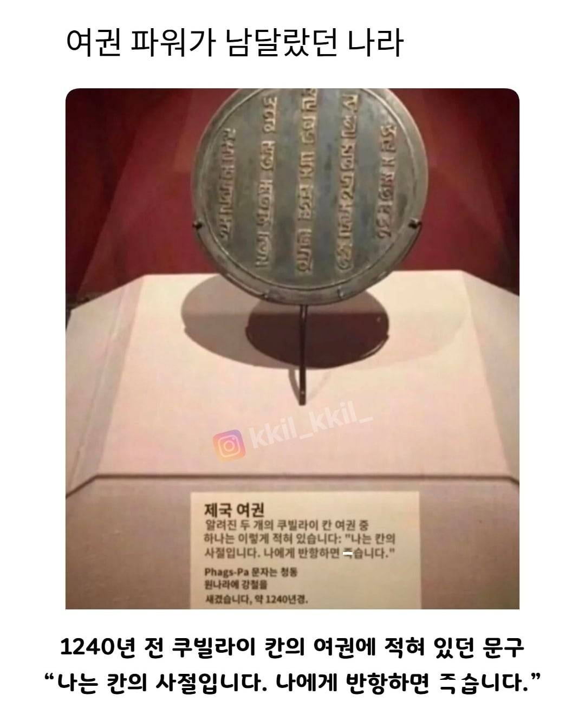

장애인, 몸 아푼분은 좨송함니다.
건장한분만요. 여자도.되지만. 짹짹거리면.
두들겨팸니다.
현장.해보신분만.요.
담베값 나오나요? 야리끼리 합니까?
원문에는 담배값이랑 야리끼리 된다고 나오지 않았냐
호라즘 왕국이 전성기 때 몽골 쌩깠다가 호라즘(이였던 것)으로 바뀌었지
너네 나라가 죽는다고
저런 모자이크 하는 사이트 도대체 어디임? 볼때마다 ㅈ같네
인스타그램
숏츠에 비속어 들어가면 수익화 안되니까 죄다 저지랄하는거지
진짜 마패네 사절단 죽이면 본진에 마패박혀버리니까
그렇게 강대했던 몽골제국이 현대에선 약소국이라는게 아이러니하네
탱크를 생산못해서그럼 말로 뛰다니기만 했지
말 안들으면 죽어!
까불면 죽소
죽어!
디2 조드룬 이구만 ㄷㄷ
반항사절
사절을 사절합니다.
상임이사국이라고!!
만약 지상이나 해상에서 이 여행자를 해칠 만큼 강한 자가 있다면 그 자로 하여금 로마 황제와 전쟁을 할 만큼 자신이 강한지 생각해 보게 할지어다 - 로마 여권